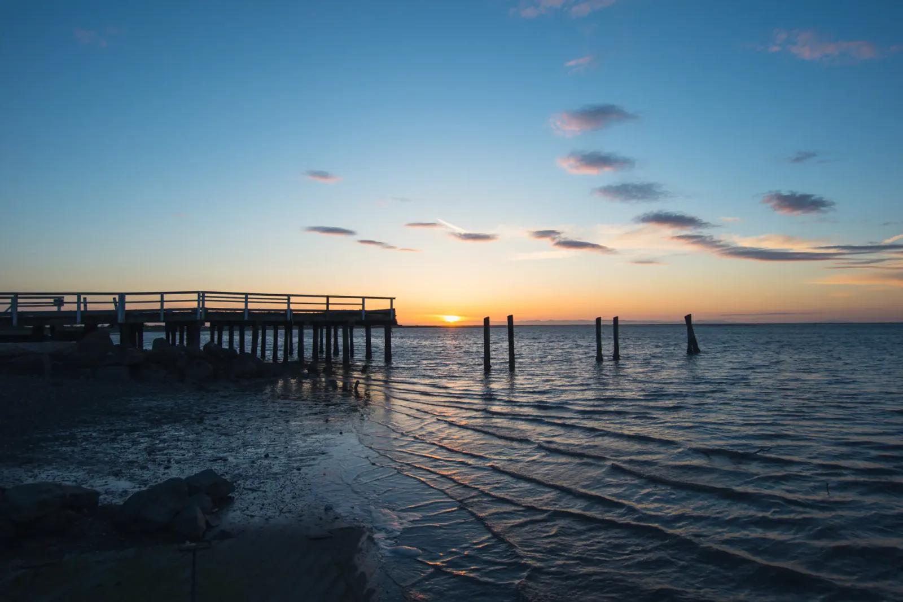

Long Way Round
No road crosses the Olympic Mountains. Highway 101 loops around them instead, so Memorial Day weekend found Will and me driving the edge and pulling over whenever the peaks showed up. Our first evening ended on a long wooden pier over the Strait of Juan de Fuca, where the water lay calm over rippled sand and the sun sank into a thin orange band. Somewhere past the haze was Canada. We stayed until the last pink faded from the clouds.
Hurricane Ridge came next. It's named for the winds that sweep across it, though we got blue sky and towering cumulus. The road climbs from the strait to nearly a mile above it, and from the top the whole range runs along the horizon, still snow-capped in late May. Cloud shadows pooled in the valleys, and a few last patches of snow lay in the meadow. Mount Olympus, the tallest peak in the range, is somewhere in that jumble. Down in the valley the light turned green. The trail to Marymere Falls starts at the Storm King Ranger Station and follows a clear creek through old-growth fir and hemlock, past sword ferns and moss-draped trunks. Then the woods open onto a ribbon of water spilling about ninety feet down a mossy cleft, with a log jam at its foot. It's an easy walk for a payoff that big!

The climb up Mount Storm King starts at the same trailhead, and it is steep. Up on the ridge the forest gives way to bare rock, and Lake Crescent lies far below, a long strip of blue between the hills, dark in the middle and teal along the shore. Glaciers carved this basin, and the lake is more than six hundred feet deep. Past the hills at its far end, a pale band on the horizon was, I think, the strait. Afterward we pulled over beside the highway for a maple draped in so much moss it glowed in the sun, and for one more look at the water. It's wonderful that places like this still exist. Somewhere behind those snowy peaks is a wilderness with no road through it, and I hope it stays that way.